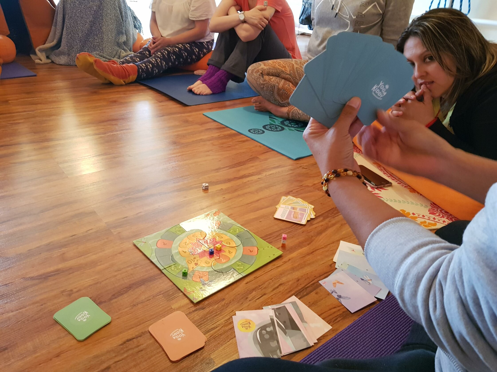
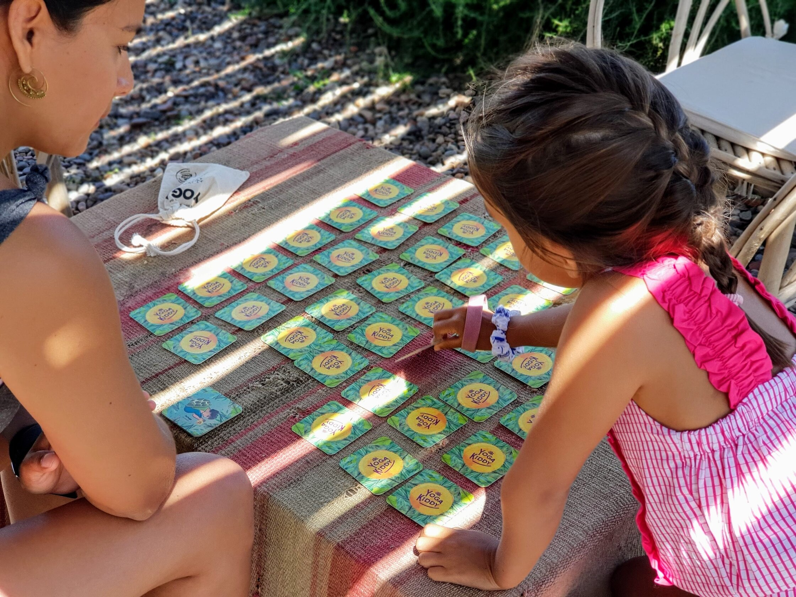

En un mundo cada vez más digital, es importante encontrar formas de ayudar a los niños a relajarse y a desconectar de sus dispositivos.
Una de las mejores maneras de hacerlo es a través del yoga, una práctica milenaria que ha demostrado ser beneficiosa tanto para el cuerpo como para la mente.
Sin embargo, puede ser difícil para los niños mantenerse interesados y motivados en las clases de yoga tradicionales.
Es por eso que los juegos de yoga para niños son una excelente opción para introducir a los más pequeños en esta práctica.
Por qué los juegos de yoga para niños son una buena manera de introducir yoga con niños:
Los juegos de yoga para niños son una excelente manera de hacer que la práctica sea más accesible y divertida para los más pequeños. Estos juegos están diseñados específicamente para niños y se basan en la práctica del yoga, pero con un enfoque lúdico.
Además, al utilizar juegos, los niños pueden aprender las posturas y técnicas de yoga de manera más relajada y sin sentirse abrumados.
El juego YogaKiddy:
El juego yogakiddy es un juego divertido y educativo que ayuda a los niños a aprender y practicar yoga de manera lúdica. Este juego incluye una variedad de posturas y técnicas de yoga para ayudar a los niños a aprender las posturas. Además, el juego incluye una guía de instrucciones fácil de seguir, lo que lo hace ideal para niños de todas las edades.
El juego de memory YogaKiddy:
El juego de memorice de yoga yogakiddy es una excelente manera de ayudar a los niños a aprender y recordar las posturas de yoga. Este juego incluye una variedad de cartas con posturas de yoga, y los niños deben emparejarlas para completar el juego. Además, el juego incluye una guía de instrucciones fácil de seguir, lo que lo hace ideal para niños de todas las edades.
En resumen, los juegos de yoga para niños son una excelente manera de introducir a los más pequeños en esta práctica beneficiosa. Estos juegos están diseñados específicamente para niños y se basan en la práctica del yoga, pero con un enfoque lúdico.